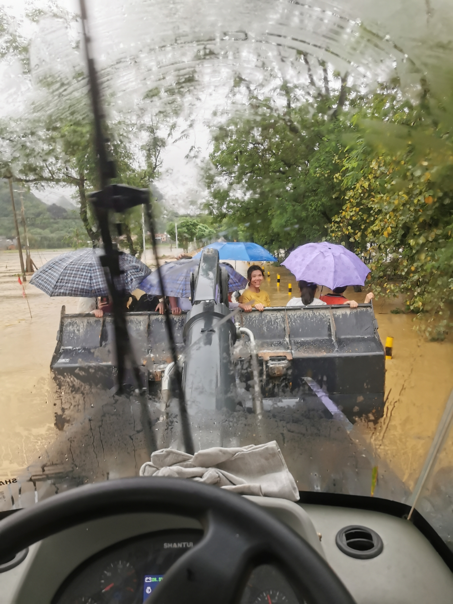
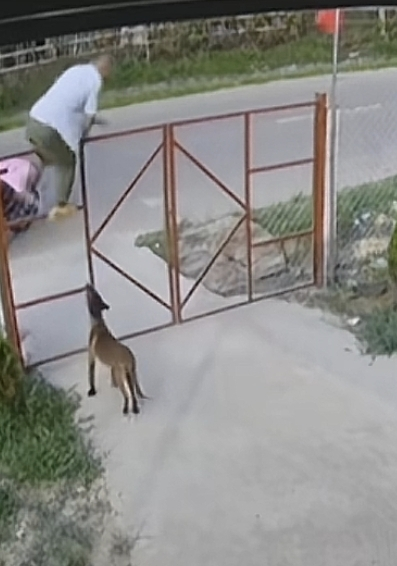
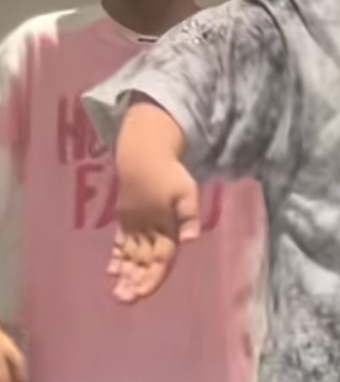
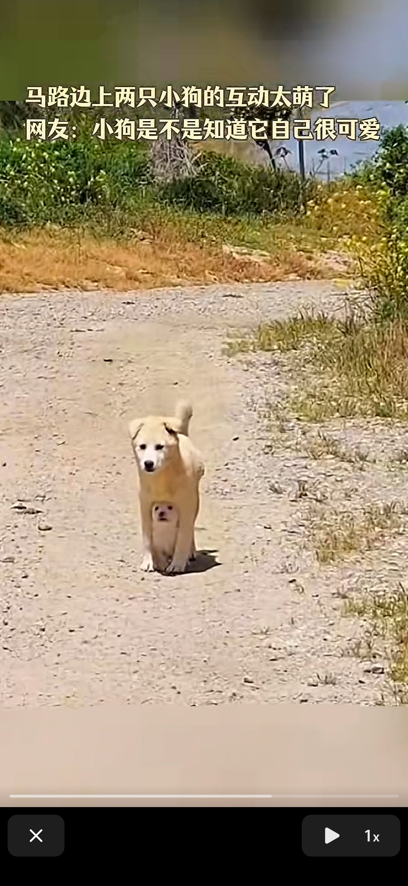
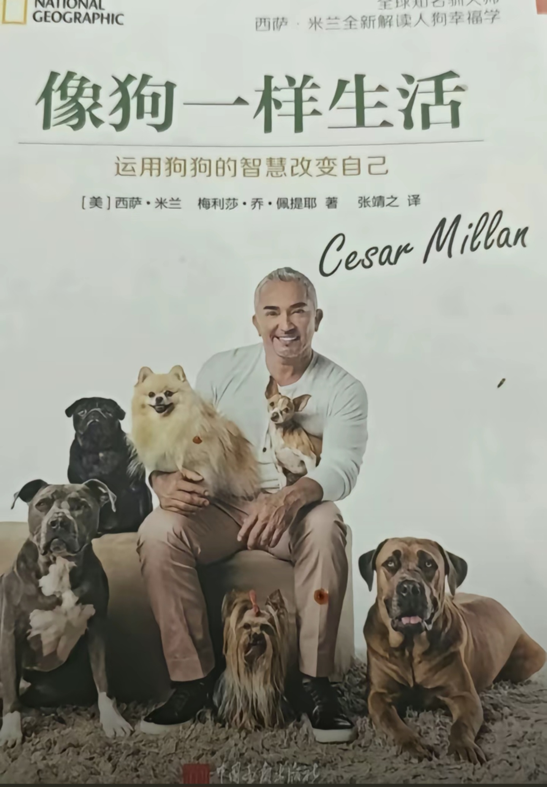
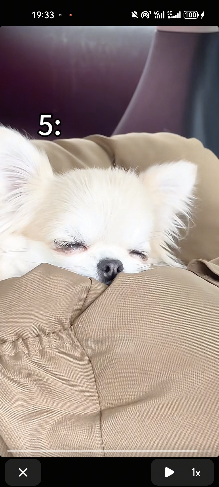
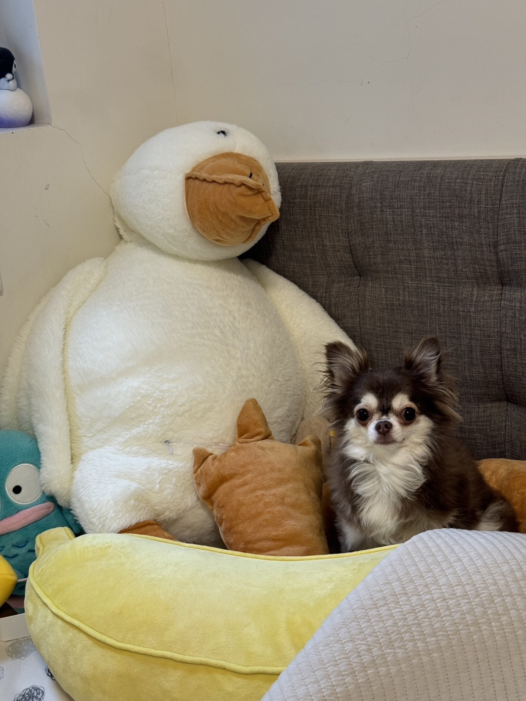
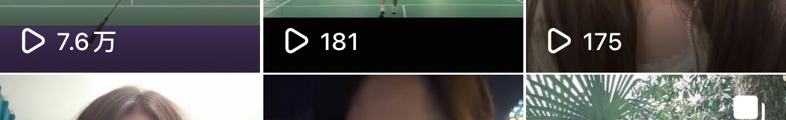

我这个呢 
扭扭车的兄弟，出了车祸没有了双腿，从这就可以看出，小妹儿，你真棒！
这急切的两声“求你了”。后面带着哭腔。看的泪目了！ 好人一生幸福 小姐姐好样的。还有她的扭扭车兄弟！ [比心][比心][比心]
一个只有一只健康的手，一个没有双腿，你们是最美的女孩！
重庆这波赢麻了，卤鹅哥，电滑麦麦
善良的小姐姐，那句“求你了”给我听哭了，陌生人都希望你活着啊[赞]
她急切的喊：求你了！求你了！求求你了！不要跳啊！[泣不成声][泣不成声][泣不成声]她当时好慌！好人一生平安🙏
姐，有空去看看哆哆和嗦嗦，我想它俩了[大笑][大笑][大笑][大笑]
哥，慢点跑，她已经走了
兄弟，我给你开的3倍我感觉博尔特不一定跑得过你
跑的过程中真的很累[捂脸]也只有体育生才可以体会吧
男友把智力有问题的女人带出去，丢了，她的父母还能收他为干儿子，竟然没有起诉追究责任，真是不可思议
给狗子看one愣one愣的[憨笑][憨笑][憨笑] 
还没出门微信步数两万步
有没有小时候狗跟着去上学的，半路还得把狗送回来，然后迟到了想哭的心都有[捂脸]
一首歌回到了小时候🎵孙辉/蓝若兮
其实很简单 让狗子上车然后再带它摔一跤就行了，我的狗子就是这样摔了以后再也不肯坐我的电动车
这门关不关有区别嘛[暗中观察]
主人:“我留着看家吗？”

有一天它也能学会翻大门[捂脸]
我家狗它还会演戏，看着我们要出门了它知道我们不会带它出去，它就假装出去玩了，其实偷偷蹲在远一点的地方暗中观察，只要骑车一走它马上就跟上[泣不成声]
我家狗只要发现我家的任何一个人，换了新衣服，或者说吃完饭去赶集，那吃饭的时候就找不到了，给鸡腿也不回来，早早的就爬十字路口等着了[捂脸]
这舞跳得，没有功劳也有麦当劳[泣不成声][泣不成声][泣不成声][泣不成声]
哈哈哈 好努力的小肥手[笑哭] 
这舞跳的，没有功劳也有苦劳
这姐妹俩幼儿园毕不了业啦[捂脸]
告诉我怎么修？博物馆那个大明康熙年制的碗 我一直以为是假的 没想到是真的
要想站在人民史观修，得把那些满清遗老全吊死在绞刑架上
就那嘉州三屠，扬州十日就已经不过审了[我想静静]。
因为那些满清遗老遗少还在，他们卡着不修
满贵族带着钱摇身一变转入了汉族，[尬笑]才导致现在上层充满了原满族[尬笑]
因为他还有个别名《1616年到1912年若干重大历史问题831的决议》 清朝靠屠杀立国，导致人口锐减。历史上，清朝在初期和未期进行了大规模屠杀，如扬州十日、嘉定三屠等，使汉人人口减少了1.2亿。 太平天国运动时期，汉人服装样式怪异，因为他们不知道以前的汉人服装具体是什么样
知道为什么闯关东时关外没啥汉人吗？ 清在辽东屠杀的基本没有了， 清史修完，你会承认华夏传承断代，
他还用上Airpods了[看] 
好可爱，哈哈哈[笑哭]
这个我也有
这就是狗狗爱钻人腿的原因？有安全感是不是
钥匙是不是[你不大行]
那必须是它了[白眼]
猫：今天看书了？ 
评论区跟上了国道似得[黑脸][黑脸]
就这样轻轻的萌翻全世界[流泪][流泪] 
第一次看到这么可爱的吉娃娃。印象中都是这样的[黑脸]
这个好漂亮 别的吉娃娃都跟姜云升似的
我的吉娃娃！ 
这才是我想象中可爱的吉娃娃 不是见到人就骑胯 见到人就大叫 狗仗人势的坏狗[微笑][微笑][微笑]
其实像吉娃娃这样的小型狗最能体现出主人的性格[色]
修补我的大门牙，哒哒哒哒
妈妈我一碰它，我嘴就忍不住打快板
嘴里炒上蛋了还
鸡蛋有电？[微笑]
好可爱啊[大笑]他怎么知道这样磕鸡蛋的
生命的同花顺 没有你我也认
谁是从一念关山，认识他的
白月梵星的兵还在吗[泣不成声][泣不成声][泣不成声]？这部剧真得很爱妆造和剧情[鼓掌][鼓掌][赞]
从鹫儿认识他的，永远的白月光，演技好又真诚，越来越好[感谢][玫瑰]
安徽这两天干了五六个了
刷个抖音运动量达标了[调皮][调皮]
待会名字后面带个🏸闻着味来了[黑脸]
抖音迟早变4399[再见]
咋的 看我找不到搭子 开始给我推荐ai的呗[微笑]
累了，精心编辑不如随手一发[呲牙][比心] 
不去赢冰箱可惜了[九转大肠]
如果末日降临答应我一定别变成丧尸[憨笑]
这个频繁程度，不行去谈一谈，给你的山姆会员打个折吧
小八你戴上那一刻，我笑容都凝固了[呲牙]
别人家父子装是衣服 你俩是头顶移动信号站 这哪是怕走丢 分明是行走的“我爷俩超可爱”宣言
拍的时候脸会比发箍红吗老师
演唱会八宝们也整一个，写上名字自己名字[看]
Read more: